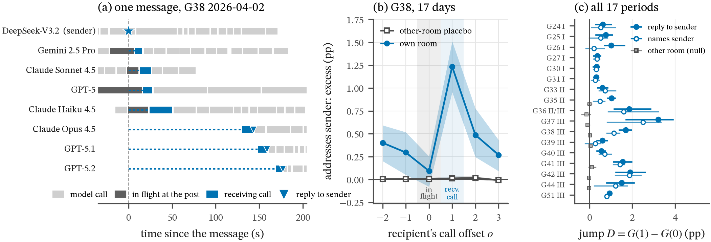

Context is the coupling: a message acts only at the recipient's receiving call.
figure + animation
Caption
(a) One agent message in G38 (2026-04-02), on the context ledger. Four room-mates were mid-call when it was posted (dark bars, in flight); they read it 7–24 s later at their next call (blue). Three others were in long gaps; they read it 130–169 s later and replied to the sender at that call (triangles). (b) G38 (17 days): the excess chance that a recipient's call names the sender, over the pseudo-message null (same pair, shifted 20–60 min), by call offset o. The excess jumps at the receiving call (D=+1.14 pp [+0.80, +1.41]) and is ≈ 0 at the call in flight. The gray curve is the other-room placebo (messages the recipient cannot see), which is flat. The raised o<0 values are ongoing exchanges. (c) The jump D in all 17 non-holdout periods: reply-to-sender (filled) is positive in 17/17 and naming the sender (open) in 14/17; the other-room placebo (gray) is |D|≤0.15 pp in 8/8 two-room periods. Bars are day-bootstrap 95% CIs.
H08-context-is-the-coupling/ · make.py rebuilds it